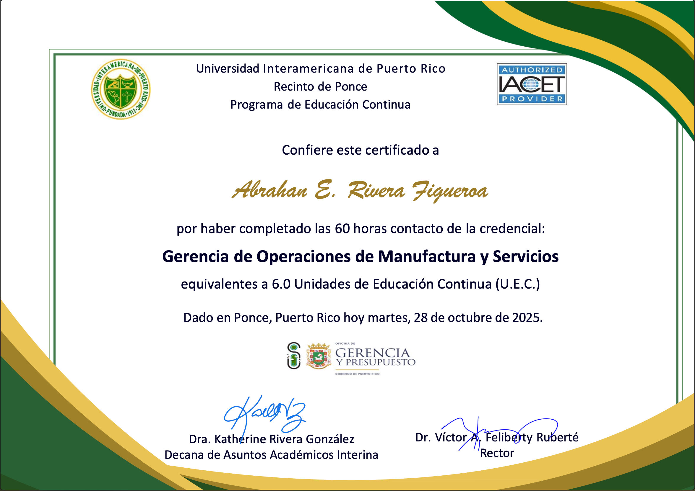
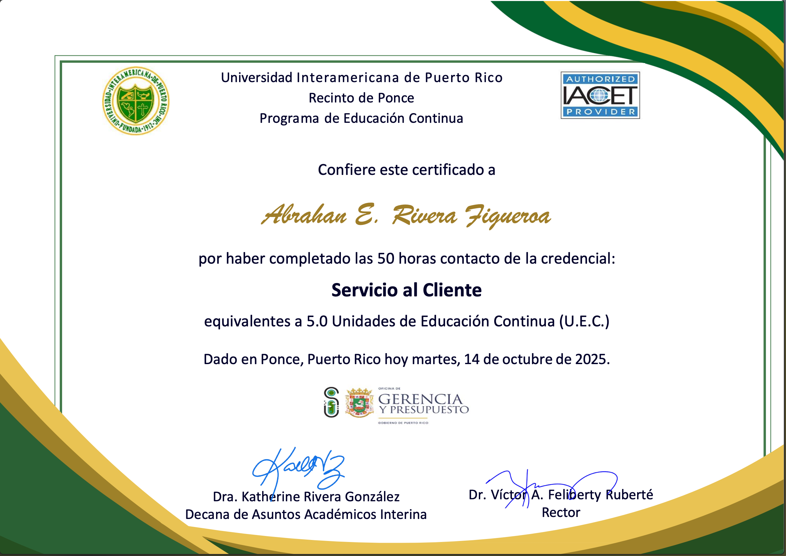
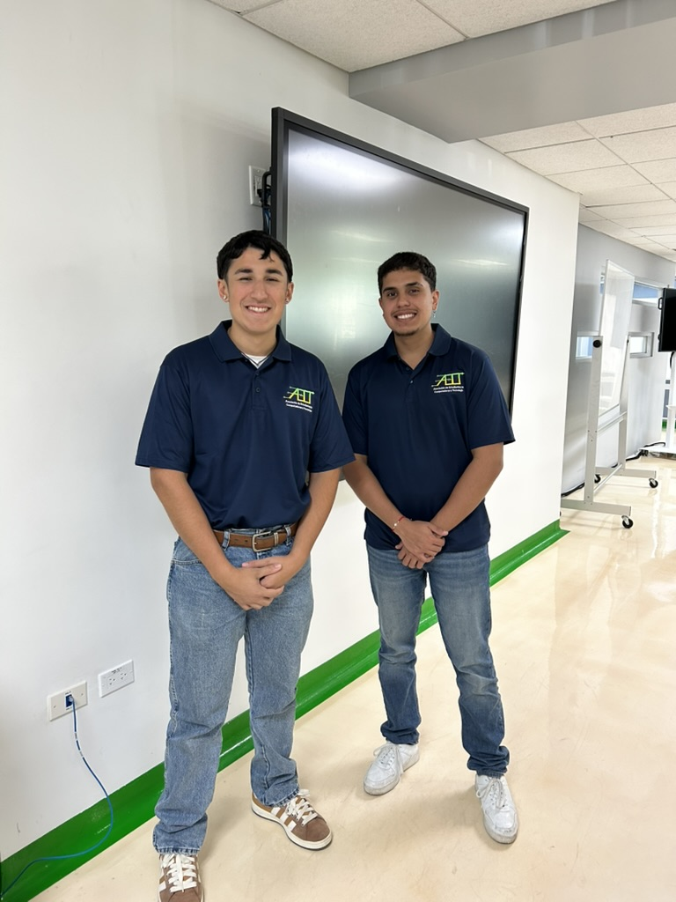
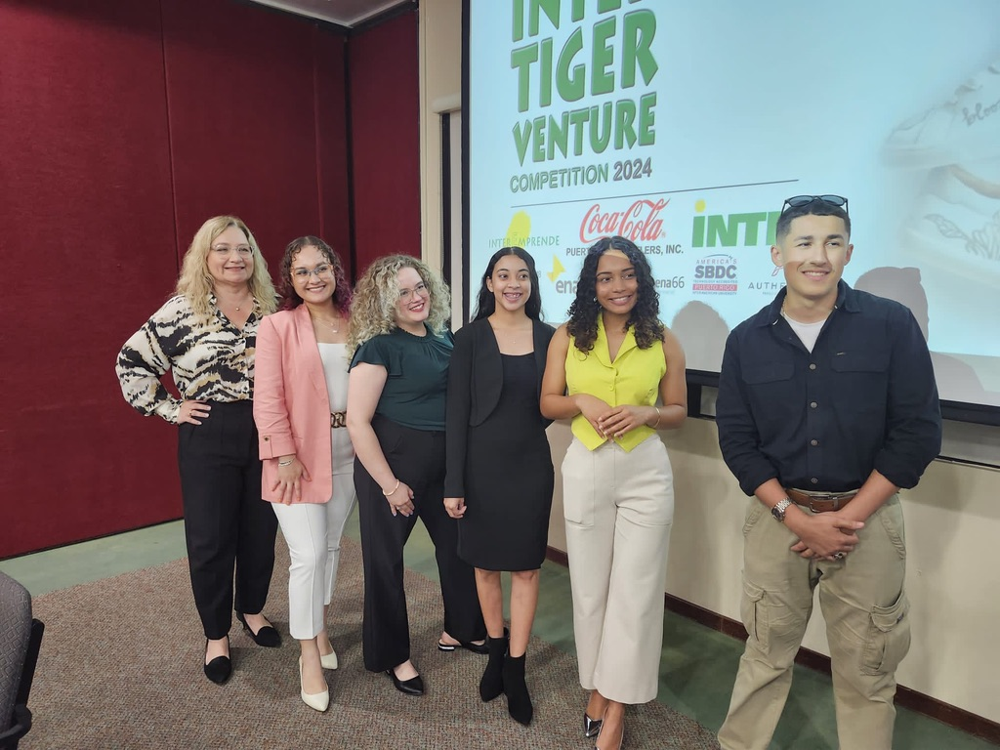
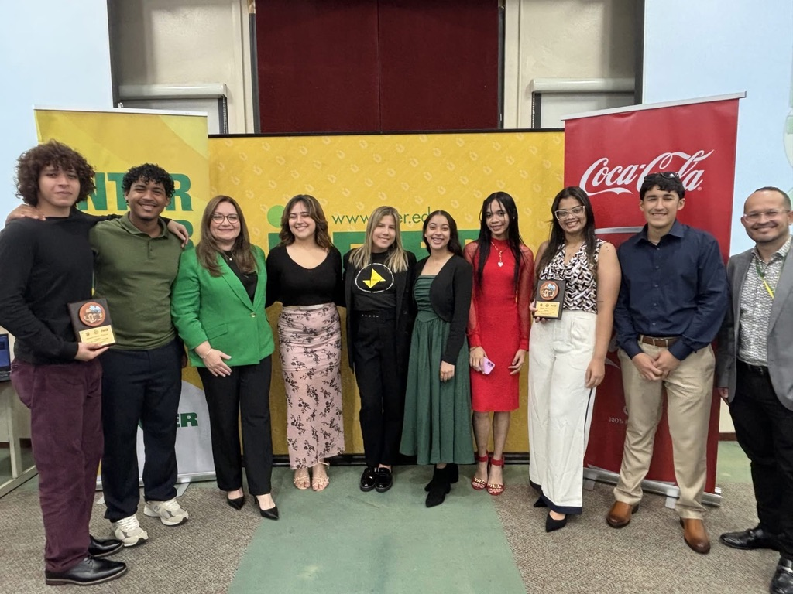

Hola, soy Abrahán Rivera
Dios les bendiga! Soy Abrahán E. Rivera Figueroa, estudiante de 5to año de Ciencias de Computadoras con concentración menor en Redes & Telecomunicaciones en la Universidad Interamericana de Puerto Rico, Recinto de Ponce.
Mi interés por la programación comenzó en el colegio gracias a actividades con Arduinos, páginas HTML básicas y creación de videojuegos en Game Maker Studio. Con el tiempo, descubrí mi pasión por el desarrollo de software, desarrollo web y videojuegos.
Además, me gusta explorar el mundo de Redes & Telecomunicaciones y la tecnología en general.
Bienvenidos a mi mundo personal: un espacio donde comparto mis proyectos, aprendizajes y todos mis inventos. ¡Dios les bendiga!
habilidades
Lenguajes de Programación
C++, C#, Visual Basic, HMTL, CSS, Java, JavaScript, SQL, PHP, SASS, Swift
IDEs
Visual Studio, Visual Studio Code, Xcode, JGrasp, Notepad++, Eclipse IDE, Apache Netbeans IDE, IntelliJ IDE
Frameworks
ASP.net, Bootstrap, WordPress
Bases de Datos
MySQL, SQL Server Management Studio, Firebase, Access
Sistemas Operativos
Windows, MacOS, Linux
Otras herramientas
WooCommerce (con WordPress), Windows Server
Habilidades blandas
Trabajo en Equipo, Resolución de Problemas, Toma de Decisiones
Cerificaciones
Certificado-Credencial de Gerencia de Seguridad

Credencial de Gerencia de Seguridad para la industria de banda ancha.
Certificado-Credencial de Redes & Telecomunicaciones

Credencial de Redes & Telecomunicaciones para la industria de banda ancha
Certificado-Credencial de Gerencia de Operaciones de Manufactura y Servicios
Credencial de Gerencia de Operaciones de Manufactura y Servicios para la industria de banda ancha
Certificado-Credencial de Servicio al Cliente
Credencial de servicio al cliente para la industria de banda ancha
Experiencias, eventos y logros
Presidente de la Asociación de Estudiantes de Computadoras y tecnología
Presidente de la AECT durante los años academicos 2024-2025 y 2025-2026
Finalista de la Inter Tiger Venture 2024
Finalista con el comercio electronico: nutriendo el mañana, diseñado para el sector agropecuario de Puerto Rico
Finalista de la ITVC 2025
Finalista con el comercio electronico: AutoFetch, diseñado para que personas compren piezas usadas de vehiculos de comerciantes verificados, sin manejar inventario, 100% en linea
Participacion en Conferencia: El proceso de investigación forense desde una perspectiva práctica

Conferencia como actividad para el cierre del mes de la concientización sobre la ciberseguridad relacionada con la investigación forense digital desde una perspectiva práctica ofrecida por el Dr. Héctor Feliciano Torres, Catedrático Auxiliar del Recinto de Ponce.